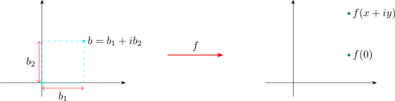
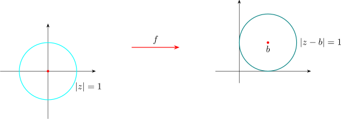
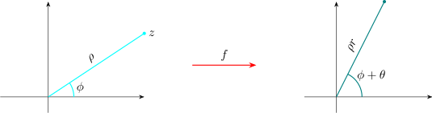
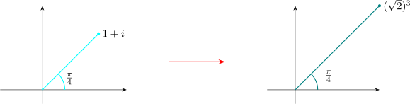
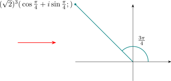

4.1 Functions
Definition 4.1. A complex valued function of a complex variable (complex function) is a rule that assigns a unique complex number \(w\) to each complex number \(z\) belonging to a set \(D\).
Example 4.2. \(f(z) = z^2 \quad \forall z \in \mathbb {C}\)
Here \(D = \mathbb {C}\)
\(f(3 + i) = (3 + i)^2 = 8 + 6i\)
\(* D\) is called the domain of the complex function
\(*\) The set \(\{ f(z): \, z \in D\}\) is called the range of the complex function.
\(* z \in D\) is a point in \(D\) and \(f(z)\) is called the image of the point \(z\) under \(f\).
Notation:
\(f: D \longrightarrow \mathbb {C}\) means that \(f\) is function (complex) with domain \(D\).
Examples
- 1.
- Constant functions: \(f: \mathbb {C}\longrightarrow \mathbb {C}\) given by \(f(z) = C\) where \(C\) is a fixed constant
- 2.
- Polynomial function: \(f: \mathbb {C}\longrightarrow \mathbb {C}\) defined by
\[f(z) = a_n z^n + a_{n - 1}z^{n - 1} + \cdots + a_0\]
Here \(n\) is a non negative integer and \(a_n , \ldots , a_0\) are complex constants \((a_n\neq 0)\).
Example 4.3. \(f(z ) = 3z^2 - (2 + i)z + 13 - \sqrt {2}i\)
Here the highest power of \(z\) carrying a non zero coefficient is 2. \(\implies f(z)\) is a second degree polynomial. Rational function: Let \(p(z)\) and \(q(z)\) be polynomial functions where \(q(z) \neq 0\). Then \(f(z) = \frac {p(z)}{q(z)}\) is called a rational function. The domain of \(z\) is the set \(\{z\in \mathbb {C}:\,q(z)\neq 0\}\)Examples
- (a)
- \(f(z) = \frac {az + b}{cz + d}\) where \(a, b, c, d\in \mathbb {C}\) and \(c\) and \(d\) are not both zeroes is a rational function.
\(f\) is called a linear fractional transformation.
Domain of \(f= \begin {cases} \mathbb {C} - \big \{-d/c\big \} & \text {if}\, c\neq 0\\ \mathbb {C} & \text {if}\quad c = 0\\ \end {cases}\) - (b)
- \(g(z) = \frac {3z^4 - (2 + i)z}{2z - 3i}\quad \forall z \in \mathbb {C} - \Big \{\frac {3i}{2}\Big \}\)
Real and Imaginary Parts of a Complex Function
Let \(f(z) = z^3\) for \(z \in \mathbb {C}\) \[f(x + iy) = (x + iy)^3 = x^3 - 3xy^2 + i(3x^2y - y^3)\]
\(\implies \, x^3 - 3xy^2\) is the real part of a function \(f\)
\(\implies \, 3xy - y^3\) is the imaginary part of a function \(f\).
In general \(f: D\longrightarrow \mathbb {C}\) is function and
\[\, \boxed {f(x + iy) = u(x,y) + iv(x,y)\, , \, \forall x + iy \in D}\]
Then \(u(x,y)\) is called the real part of \(f\) and \(v(x,y)\) is called the imaginary part of \(f\).
Visualizing Complex Functions
Example 4.4. \(f: \mathbb {C}\longrightarrow \mathbb {C}\) defined by \(f(z) = z + b\) ( \(b\) is a fixed complex number) \(D = \mathbb {C}\)

\(f(0)=0+b=b^*\)
\(f(x+iy)= x +iy+ b_1 + ib_2 = (x +b_1)+i(y+ b_2)\)

\[f\big (\big \{z:|z|=1\big \}\big )=\big \{z:|z-b|=1\big \}\]
Example 4.5. \(f(z) = az\) for \(z \in \mathbb {C}\) where \(a\) is a fixed non zero constant.
If \(a = r(\cos \theta + i\sin \theta )\) and if \(z = \rho ( \cos \phi + i \sin \phi )\). Then \(f(z) = \rho r ( \cos (\theta + \phi ) + i \sin (\theta + \phi ))\)

Example 4.6. \(f(z) = az + b\quad z \in \mathbb {C}\) can be visualized as follows:
- 1.
- \(z\) is elongated (or contracted) by a factor \(\left |a\right |\).
- 2.
- Then it is rotated (in the counter clockwise direction) by angle \(\operatorname {arg}(a)\)
- 3.
- Then it is translated by a vector \(b\).
Example 4.7. \(f(z) = z^3\quad \forall z \in \mathbb {C}\)
\(f[r(\cos \theta + i \sin \theta ) ] = r^3(\cos 3\theta + i \sin 3\theta )\)
So \(f\) can be visualized as follows:
- 1.
- Given a complex number \(z\) with modulus \(r\) and argument \(\theta \), first elongate vector \(z\) as \(r^3\)
- 2.
- Then rotate \(z\) upto the ray \(\phi = 3\theta \)
Let \(z = 1 + i = \sqrt {2} \Big (\cos \frac {\pi }{4} + i \sin \frac {\pi }{4}\Big )\)


Questions on this section
Stuck on something here? Ask below and it stays attached to this topic.